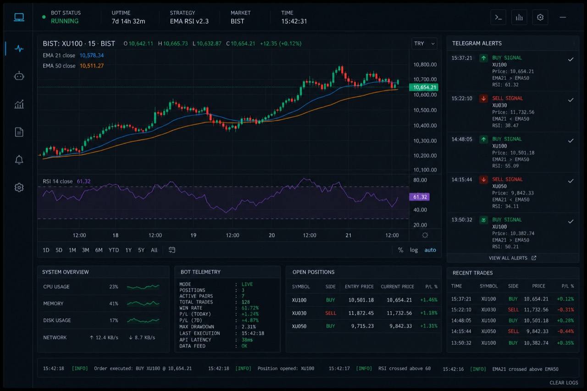
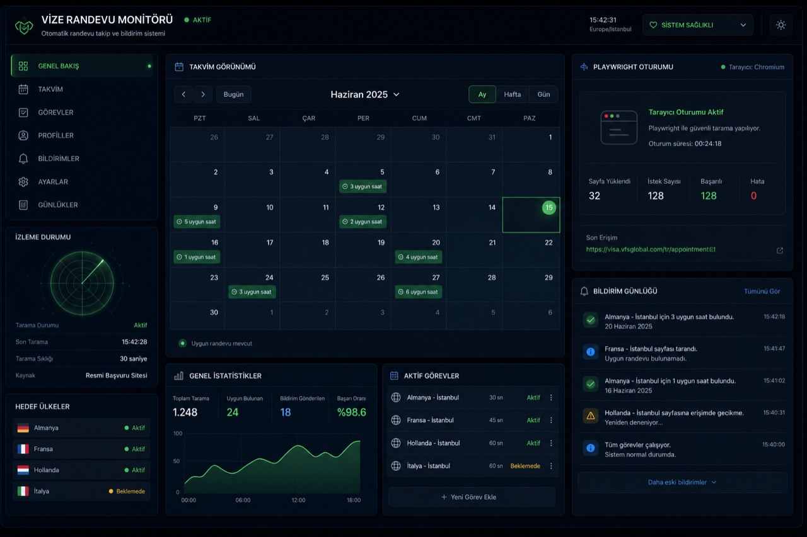
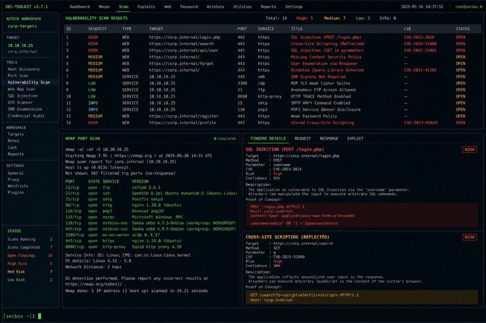

Ofansif Bakış Açısı
Daha güçlü savunmalar inşa etmek için saldırgan gibi düşünüyorum. Web uygulama testleri, ağ keşfi ve zafiyet analizi, dokunduğum her sistemi değerlendirme biçimimin temelini oluşturuyor.
Siber Güvenlik Mühendisi & Geliştirici
Güvenli yazılımlar geliştiriyor, karmaşık iş akışlarını otomatikleştiriyor ve saldırganlardan önce zafiyetleri tespit ediyorum. Sızma testlerinden üretim seviyesi trading botlarına — güvenlik her katmanda gömülü.
Kod ile savunmanın kesişim noktasında çalışan, güvenlik odaklı bir geliştirici.
Daha güçlü savunmalar inşa etmek için saldırgan gibi düşünüyorum. Web uygulama testleri, ağ keşfi ve zafiyet analizi, dokunduğum her sistemi değerlendirme biçimimin temelini oluşturuyor.
Python, JavaScript ve Go; otomasyon hatlarımı, trading algoritmalarımı ve güvenlik araçlarımı güçlendiriyor. Denetlenebilir, dayanıklı ve ilk günden sertleştirilmiş kod yazıyorum.
Linux yönetimi, konteynerleştirme ve ağ temelleri, dağıtımlarımı yalın ve kilitli tutuyor. Docker'dan Nginx'e — üretim güvenliği sonradan eklenen bir düşünce değil.
Şehir ölçeğinde tehdit yüzeyi izleme
Ofansif, defansif ve geliştirme alanlarında kategorize edilmiş uzmanlık.
Güvenlik ve performans odaklı, üretim seviyesinde sistemler.

CANLI SİSTEMBIST piyasalarını gerçek zamanlı takip eden, RSI ve EMA trend analizleri yapan sistem. Histerezis korumalı alım-satım alarmlarını Telegram üzerinden iletir; Grok AI entegrasyonu ile akıllı sinyal filtreleme.

OTOMASYONVize randevu müsaitliğini gerçek zamanlı tarayan ve kullanıcıları anında bilgilendiren otomasyon sistemi. Güvenli oturum yönetimi ve Cloudflare farkındalığına sahip scraping mantığı.

ÖZELWeb sunucu zafiyet taraması, SQL injection ve XSS tespiti ile ağ trafiği analizi yapan otomatik raporlama destekli özel ofansif güvenlik paketi.
help yazarak keşfet. neofetch, hack, matrix veya fortune dene.
İş birlikleri, siber güvenlik danışmanlığı ve proje teklifleri için açığım.